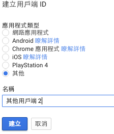
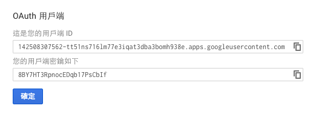
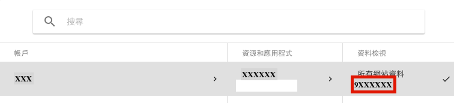

之前為了觀察公司產品銷售情況，利用RGoogleAnalytics這個套件，完成Google Analytics與R串接。雖然RGoogleAnalytics的說明文件裡，寫得還蠻清楚的，但當初在使用時，還是有些部分需要自己想辦法，趁自己尚未完全忘記之前，趕快來筆記一下。
取得Client ID and secret：
1. 到https://console.developers.google.com。
2. 選擇Analystics API，啟用API。

3. 進入憑證頁面。

4. 點選憑證，選擇『OAuth用戶端ID』。

5. 點選其他並命名。

6. Get Client ID and secret!

接著，就可以執行以下指令了：
library(RGoogleAnalytics)
# 取得Token
test_au=Auth(client.id, client.secret)
# 驗證Token
ValidateToken(test_au)如果之前曾經用R儲存過跟google API相關的token，就會出現以下的問題，請選擇NO：
Use a local file ('.httr-oauth'), to cache OAuth access credentials between R sessions?
1: Yes
2: No設定查詢的條件：
query.list <- Init(start.date='2016-07-01',
end.date='2016-07-29',
dimensions="ga:date",
metrics="ga:transactionRevenue",
max.results=10000,
sort="-ga:date",
table.id="ga:xxxxxxxx")這部分有幾個地方要注意：
1. dimensions指的是我要以哪個面向來抓資料，而metrics指的是要下載的資料內容，以上面的code為例，即是抓每一天的交易額。不同dimensions相對應的metrics不同，所以要設定正確。詳情可看Dimensions & Metrics Explorer
2. 每個網站的資料都會有一個相對應的table ID，進到網站的GA頁面，可以點選左上角的『所有網站資料』，就可以看到有個資料檢視的欄位，裡面的數字就是table ID，共八個數字。別忘記在數字之前加上ga:。


困難的部分結束囉～～剩下的事情就只是資料下載與整理。
下載
ga.query <- QueryBuilder(query.list)
transactions <- GetReportData(ga.query,
test_au,
split_daywise=T,
delayedAssign(5))
transactions=transactions %>%
arrange(date) %>%
mutate(group=factor("Revenue"),
date=seq(as.Date("2016-07-01"),as.Date("2016-07-29"),"days"))稍微整理一下，就可以畫成趨勢圖了：